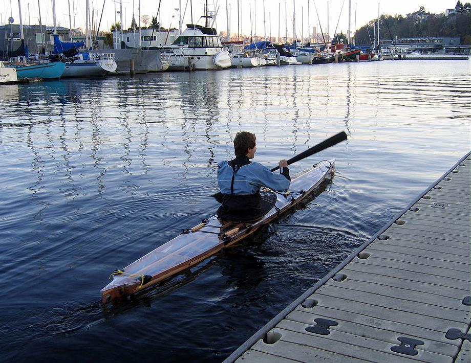

Nikumi by Paul Clayton (US)
Menu
Previous Page
Next Page

Paul, from Seattle, Washington paddles his vinyl clear skin Nikumi baidarka. He earlier completed a
Sea Tour 15-R.
Use the
{Back}
key to return.